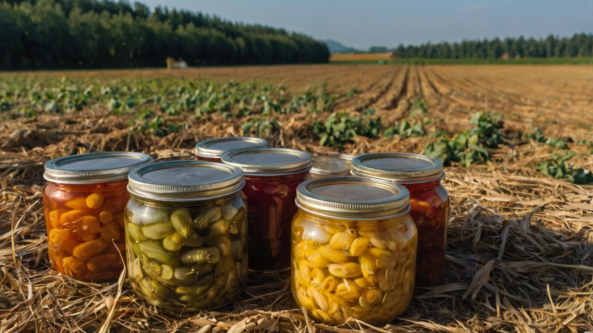
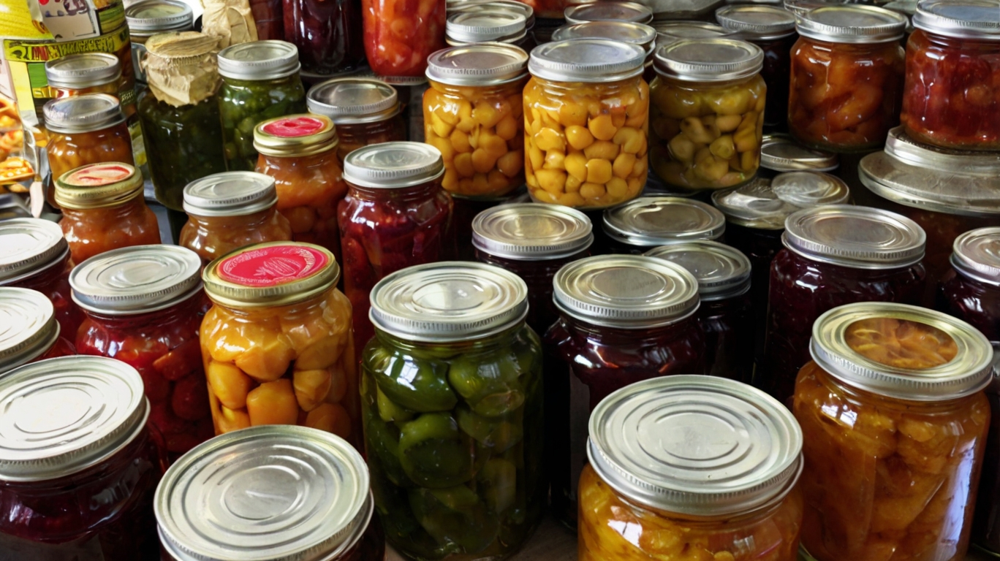
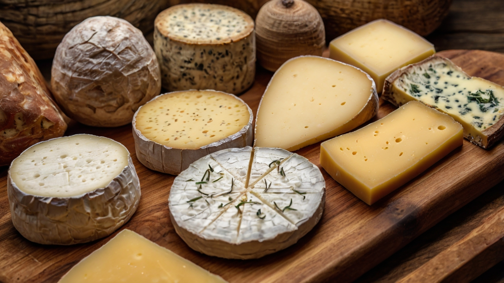

Tradições e Técnicas Artesanais
Fermentação
A fermentação é uma técnica antiga usada para preservar alimentos e aumentar seu valor nutricional. No campo, é comum encontrar receitas de chucrute, kimchi, picles e outros alimentos fermentados. Na gastronomia urbana, esses produtos estão ganhando espaço não só por seus sabores únicos, mas também por seus benefícios à saúde, como a melhora na digestão e o fortalecimento do sistema imunológico.
Mercados de produtores locais
Conservas e Compotas No campo, a prática de fazer conservas e compotas é uma maneira de aproveitar ao máximo a colheita e garantir a disponibilidade de frutas e vegetais durante todo o ano. Nas cidades, essa tradição tem sido adotada por aqueles que desejam capturar os sabores da estação em potes de geleias, chutneys, picles e outras delícias. Esses produtos não só adicionam variedade às refeições, mas também são uma forma de evitar o desperdício de alimentos.
Gastronomia sustentável
Queijos ArtesanaisA produção de queijos artesanais é uma prática comum em muitas regiões rurais, onde o leite fresco é transformado em queijos de sabores únicos e texturas variadas. Na gastronomia urbana, esses queijos são valorizados por sua qualidade e diversidade. Feitos em pequenas fazendas com métodos tradicionais, os queijos artesanais oferecem uma experiência gastronômica autêntica que conecta os consumidores à origem do alimento.